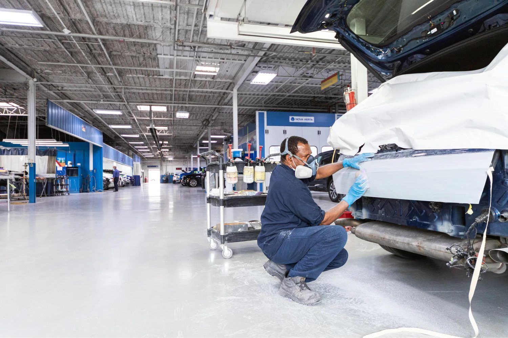
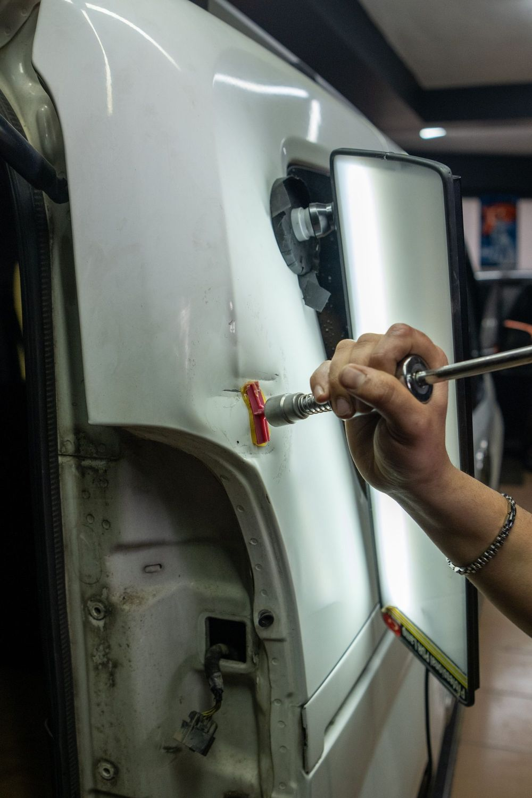

Damage Review & Photos
Visible and hidden damage is inspected, photographed and documented in the detail carriers need to approve the correct repair.
↗We document the damage, keep the repair conversation organized with your insurance company, and handle supplements when hidden damage turns up. You stay informed the whole way.
Insurance carriers maintain networks of preferred shops and will often steer you toward one. That is a suggestion. In Connecticut, the decision about who repairs your vehicle belongs to you.
Once you tell your carrier which shop you have chosen, the claim can be processed there. We handle the rest of the conversation so you are not stuck relaying technical repair details between two parties who use different vocabulary.
The most common source of friction in a claim is the gap between the initial estimate and the actual damage. First estimates are written from what is visible, sometimes from photographs. Once the damaged area is disassembled, additional damage almost always appears.
We photograph and document that damage and submit it as a supplement. This is a normal part of the process, not a dispute, but it does require someone to actually do the documentation work rather than quietly repairing around the problem.
Throughout the repair you hear from the shop directly. If a part is back-ordered or an approval is holding things up, you know about it, rather than calling to find out nothing has happened in a week.
The administrative side of a repair, handled so you do not have to.
Visible and hidden damage is inspected, photographed and documented in the detail carriers need to approve the correct repair.
↗We keep the technical repair discussion organized with your insurance company so you are not translating between two parties.
↗Damage found during teardown is documented and submitted for approval so it gets repaired rather than skipped.
↗Call us before the vehicle is moved. We help get it to the shop instead of a storage lot that bills by the day.
↗We go through the estimate with you in plain language so you understand what is being repaired, replaced and why.
↗You hear from us about parts delays and approval holds instead of finding out by calling.
↗After an accident, a tow truck often arrives before you have made any decisions, and the vehicle can end up at a storage facility that charges daily. Calling us first means we can help direct the vehicle to the shop and keep those fees from stacking up while the claim gets sorted out.
Before the vehicle is moved, call the shop. We tell you what to document at the scene and what the carrier will ask for.
File with your carrier and tell them your vehicle is going to Exclusive Auto Lab. That is all it takes to direct the claim here.
We inspect, disassemble where needed, photograph everything and build a repair plan the carrier can act on.
Work proceeds as approvals come through, with supplements submitted for hidden damage and status updates along the way.
Dealing with a claim after an accident? Exclusive Auto Lab provides insurance claim assistance in North Haven, CT, including damage documentation, carrier communication, supplement handling and towing coordination.
We work with claims from all major carriers. The important thing to know is that the choice of repair shop is yours, and a carrier recommendation does not override it.
Serving North Haven, New Haven, Hamden, Wallingford, Cheshire, Branford, East Haven, West Haven, Meriden and surrounding Connecticut communities.
No. Carriers maintain networks of preferred shops and will recommend one, but in Connecticut the choice of repair facility is yours. Telling your carrier which shop you have chosen is enough to direct the claim there.
We work with claims from all major carriers. The process is similar across companies: damage is documented, an estimate is agreed on, and supplements are submitted for additional damage found during repair.
Your deductible is your responsibility under the policy and is due at pickup unless your carrier has arranged otherwise. Be cautious of any shop that offers to make a deductible disappear, since that creates problems for you, not just for them.
That is what a supplement is for. Additional damage found during teardown is photographed, documented and submitted to the carrier for approval before the work proceeds. It is a routine part of most collision claims.
Rate decisions are made by your insurance company based on your policy, your history and fault determination, not by the repair shop. Your agent is the right person to ask before you decide whether to file.
You can, but you are generally not required to. An estimate written from a photo or a quick walkaround is a starting number, not a final one. What matters more is that the shop documents hidden damage properly once the vehicle comes apart.
Reference images showing the kind of work involved. Follow our Instagram for current jobs coming through the shop.




Call, text photos, or request an appointment online. We will tell you what to expect before you bring the vehicle in.